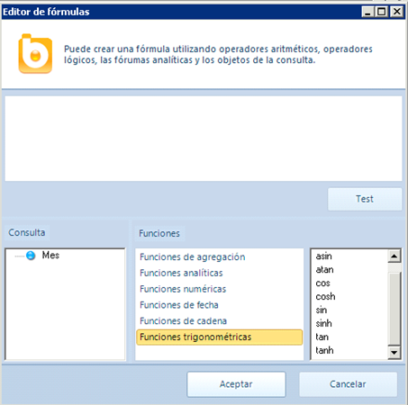

Existen un gran número de fórmulas a aplicar a los objetos. Puedes crear una fórmula utilizando operadores aritméticos, operadores lógicos, fórmulas analíticas y los objetos de la consulta.

En el editor de fórmulas puedes consultar la sintaxis de una fórmula así como un inventario de las disponibles.
Funciones disponibles
Las funciones que Bingo permite son las siguientes:
Funciones de agregación
- avg
- count
- max
- min
- stddev
- stdev
- sum
- var
Funciones analíticas
- ntile
- rank
- rankdense
- rownumber
- runningsum
Funciones numéricas
- abs
- ceiling
- exp
- floor
- greatest
- hex
- isnull
- isnumeric
- least
- log
- log10
- newid
- power
- rand
- round
- sign
- sqrt
Funciones de fecha
- dateadd
- datediff
- datepart
- day
- dayofweek
- dayofyear
- getdate
- getutcdate
- hour
- isdate
- milisecond
- minute
- month
- second
- timeofday
- year
Funciones de cadena
- ascii
- charindex
- chow
- datalength
- leith
- len
- lower
- ltrim
- replace
- replicate
- right
- rtrim
- substring
- trim
- upper
Funciones trigonométricas
- acos
- asin
- atan
- cos
- cosh
- sin
- sinh
- tan
- tanh